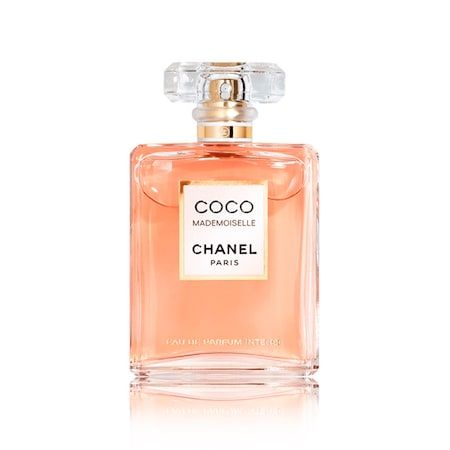
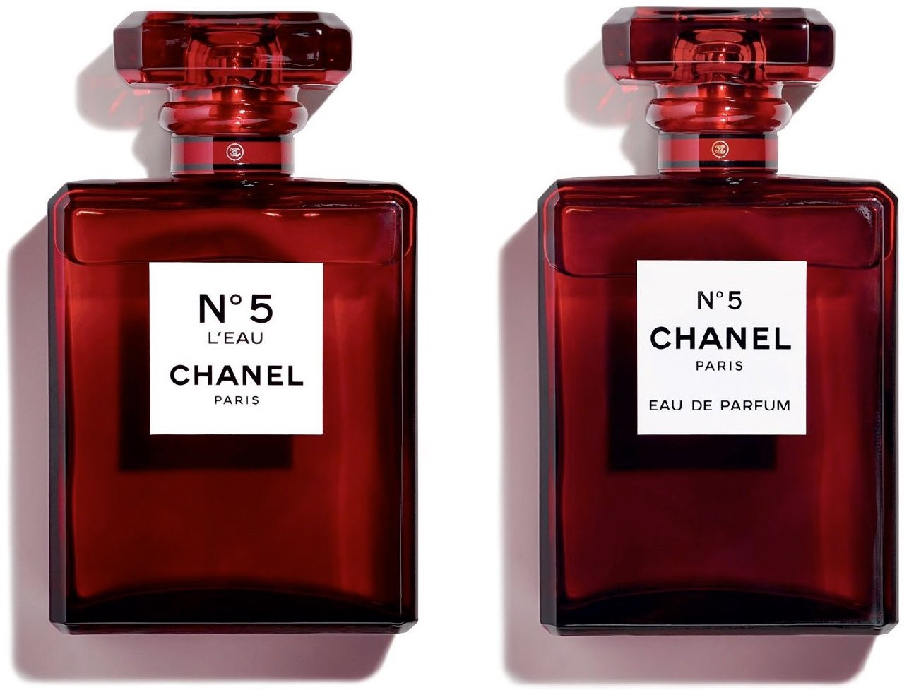

Coco Chanel (rođena 19. kolovoza 1883., Saumur, Francuska — preminula 10. siječnja 1971., Pariz) bila je francuska modna dizajnerica koja je vladala pariškom visokom modom gotovo šest desetljeća. Njezini elegantno ležerni dizajni inspirirali su žene da napuste kompliciranu, neudobnu odjeću—kao što su podsuknje i korzeti—koja je prevladavala u ranoj odjeći 20. stoljeća. Među njezinim sada klasičnim inovacijama su Chanel kostim, prošivena torbica, bižuterija i “mala crna haljina”. Također je bila poznata po ikoničnom parfemu Chanel No. 5.
 